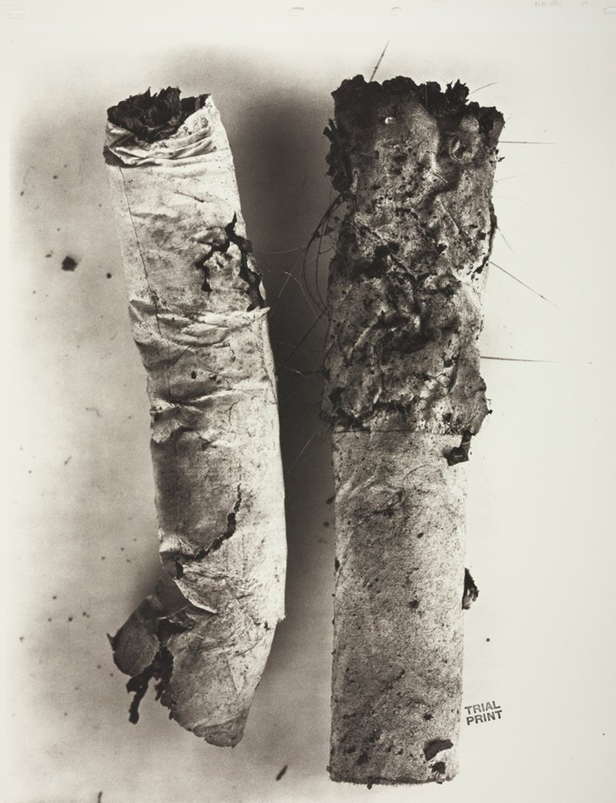

Cigarette No. 17, New York
Irving Penn · 1972, printed December 1974 · Platinum-palladium print · 59.1 × 47.2 cm · Art Institute of Chicago
In copyright. Look and learn: shown for study, not for download.
Penn made the negative in 1972 and printed it in December 1974 in platinum and palladium, a process he had been working at since 1964. It needs a negative the size of the print. Penn coated the paper himself and often exposed one sheet two or three times, mounting it on aluminum with registration guides so the negative lined up each time. The Museum of Modern Art showed his cigarette pictures in 1975. He gave this print to the Art Institute in 2001.